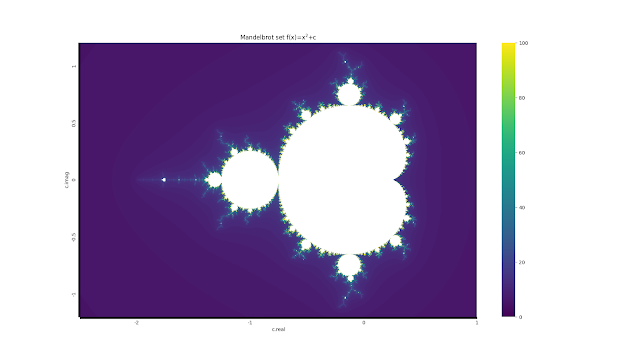
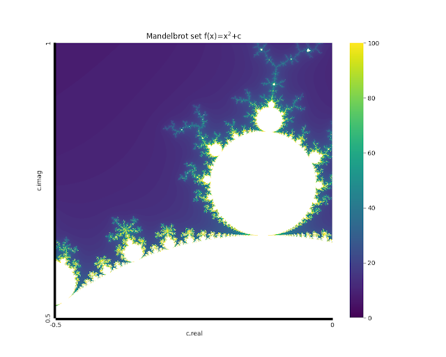

曼德勃罗集合是一个在复平面上的分形。定义级数z，z(0)=0，z(n+1)=z^2+c。使得级数z收敛的所有c（复数）的集合即为曼德勃罗集。
The Mandelbrot set is a fractal on the complex plane. It is defined
by the series z where z(0)=0 and z(n+1)=z^2+c. The collection of all c
(complex numbers) that make the series z converge is the Mandelbrot
set.
不收敛的级数也有有趣之处，我们可以去研究其发散的速度。一般来说，越接近曼德勃罗集合的点，其级数发散得越慢。
The series that doesn't converge is also interesting, as we can
examine the rate at which it diverges. Generally, points near the
Mandelbrot set tend to have series that diverge slowly.
以下为绘制曼德勃罗集合的全部代码。
Below is the code.
1 2 3 4 5 6 7 8 9 10 11 12 13 14 15 16 17 18 19 20 21 22 23 24 25 26 27 28 29 30 31 32 33 34 35 import numpy as npimport seaborn as snsfrom matplotlib import pyplot as pltdef mdbt (c: complex ): f_x = 0 for i in range (200 ): f_x = f_x * f_x + c if abs (f_x) > 10e10 : return i return None x_list = [(x - 2500 ) / 1000 for x in range (3501 )] y_list = [(y - 1200 ) / 1000 for y in range (2401 )] z = np.zeros([3501 , 2401 ]) for x in enumerate (x_list): print (x[0 ]) for y in enumerate (y_list): z[x[0 ], y[0 ]] = mdbt(complex (x[1 ], y[1 ])) fig = plt.figure(figsize=(18 , 10 )) x_labels = ['' ] * 500 + ['-2' ] + ['' ] * 999 + ['-1' ] + ['' ] * 999 + ['0' ] + ['' ] * 999 + ['1' ] y_labels = ['' ] * 200 + ['-1' ] + ['' ] * 499 + ['-0.5' ] + ['' ] * 499 + ['0' ] + \ ['' ] * 499 + ['0.5' ] + ['' ] * 499 + ['1' ] + ['' ] * 200 sns.heatmap(z.transpose(), cmap='viridis' , xticklabels=x_labels, yticklabels=y_labels, vmax=100 , vmin=0 ).invert_yaxis() plt.xlabel('c.real' ) plt.ylabel('c.imag' ) plt.title('Mandelbrot set f(x)=x$^2$+c' ) plt.show()

曼德勃罗集具有无限复杂的细微分形结构。稍微改动上述代码，即可放大绘制其局部。比如下图就是一个曼德勃罗集，其中c的实部在-0.5,
0之间，虚部在0.5, 1之间。
The Mandelbrot set is characterized by an infinitely intricate
fractal structure. By simply adjusting the code mentioned above, you can
magnify and sketch its sections. For instance, the image below is a
Mandelbrot set where the real part of c ranges from -0.5 to 0, and the
imaginary part from 0.5 to 1.
1 2 3 4 5 6 7 8 9 10 11 12 13 14 15 16 17 18 19 20 21 22 23 24 25 26 27 28 29 30 31 32 33 34 35 36 import numpy as npimport seaborn as snsfrom matplotlib import pyplot as pltdef mdbt (c: complex ): f_x = 0 for i in range (200 ): f_x = f_x * f_x + c if abs (f_x) > 10e10 : return i return None x_range = (-0.5 , 0 ) y_range = (0.5 , 1 ) x_list = np.linspace(x_range[0 ], x_range[1 ], 10001 ) y_list = np.linspace(y_range[0 ], y_range[1 ], 10001 ) z = np.zeros([10001 , 10001 ]) for x in enumerate (x_list): print (x[0 ]) for y in enumerate (y_list): z[x[0 ], y[0 ]] = mdbt(complex (x[1 ], y[1 ])) fig = plt.figure(figsize=(10 , 8 )) x_labels = [str (x_range[0 ])] + ['' ] * 9999 + [str (x_range[1 ])] y_labels = [str (y_range[0 ])] + ['' ] * 9999 + [str (y_range[1 ])] sns.heatmap(z.transpose(), cmap='viridis' , xticklabels=x_labels, yticklabels=y_labels, vmax=100 , vmin=0 ).invert_yaxis() plt.xlabel('c.real' ) plt.ylabel('c.imag' ) plt.title('Mandelbrot set f(x)=x$^2$+c' ) plt.show()

有人想拿这东西当头像吗，还挺好看的。（
Does anyone want to use this as their profile picture? It's quite
nice-looking.